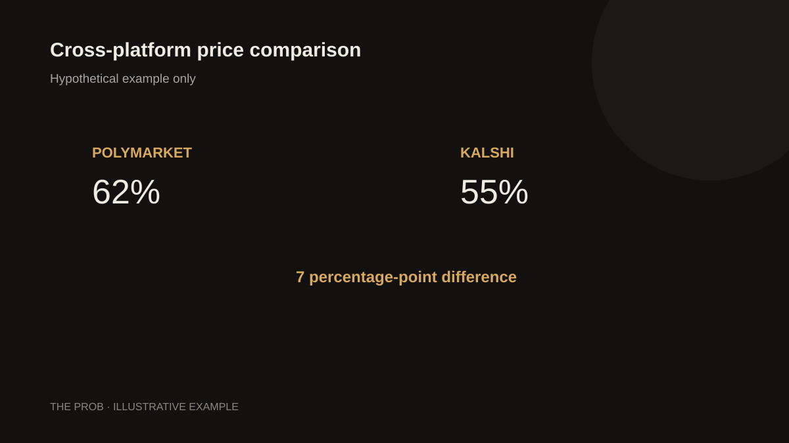
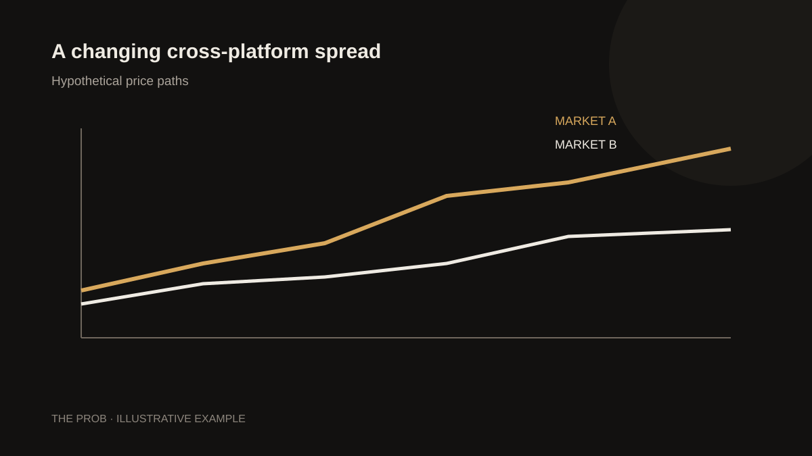
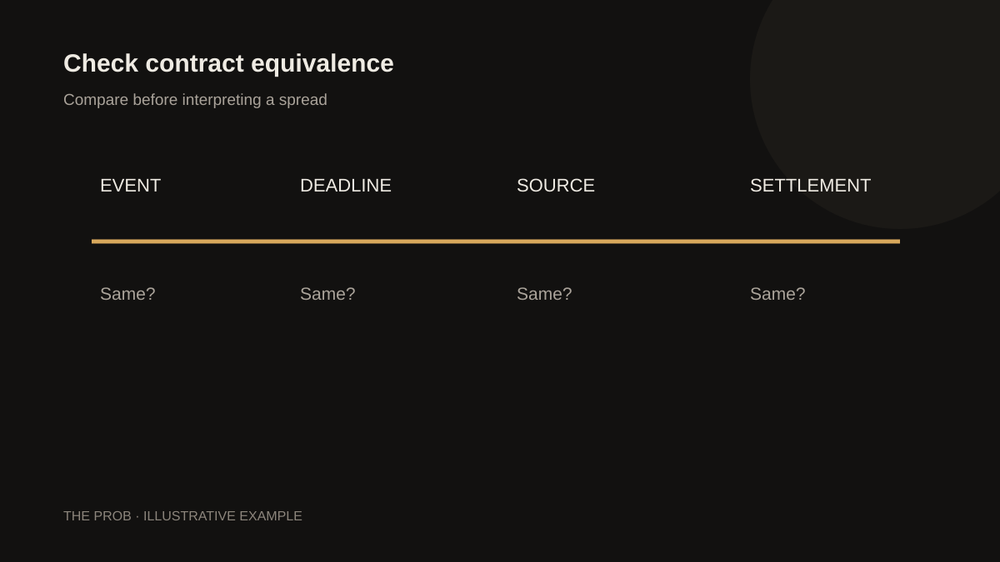

Polymarket and Kalshi often list the same event at noticeably different odds. That's not a glitch. It's information. Here's how to read it.
You open The Prob. One card says 68% on Kalshi. Another says 61% on Polymarket. Same event, same resolution criteria, one week away. Which number is right?
Both can be right at the same time. That's the nature of two distinct markets with different participants, different fee structures, and different regulatory environments. The spread between them is a signal worth understanding.
Before diving into the differences, it helps to understand what any prediction market price represents. For that foundation, start with how to read prediction market odds.
| Feature | Polymarket | Kalshi |
|---|---|---|
| Regulatory status (as of 2025) | Crypto-based, operates offshore | CFTC-regulated exchange |
| Settlement currency | USDC (crypto stablecoin) | US dollars |
| US users | Restricted for US residents | Open to US residents |
| Market scope | Broad: global politics, crypto, sports, culture | US-focused: elections, economics, weather |
| Fee structure | Maker/taker model | Maker/taker model |
Regulatory and product details change. Treat the table above as a starting point and verify current terms directly with each platform. Both platforms are referenced as they existed through mid-2025, based on publicly available documentation.
Different participant pools bring different information and different risk appetites. Polymarket attracts a global, crypto-native audience with higher average risk tolerance. Kalshi attracts US-based, often more risk-averse, retail participants. When those groups disagree on an event's probability, prices diverge.
Fees matter too. Each platform takes a cut on contracts. After fees, the same underlying belief translates to slightly different prices on each platform, depending on the size of the trade and fee tier.
Contract wording also differs. Polymarket and Kalshi may list an event that sounds identical but resolves differently, triggering YES or NO under different conditions. A small difference in resolution criteria can explain a large price difference. Always read the resolution rules before comparing prices across platforms.

A small spread (1-3%) is normal. It reflects fees and minor participant differences. It doesn't signal anything interesting.
A wider spread (5%+) is worth investigating. It could mean one platform has better-informed participants. It could mean the resolution criteria differ meaningfully. It could mean liquidity is thin on one side, letting a few large trades push the price. For a primer on liquidity effects, see prediction market liquidity.

What The Prob shows: When the same event appears on multiple platforms, The Prob surfaces both prices side by side. A widening spread is highlighted. The goal is to put you in front of the information, not to tell you what to do with it.
When both platforms price an event within 2-3% of each other with healthy volume, that's a relatively robust consensus. Neither participant pool is working from dramatically different information.
When prices diverge significantly, the right question is: who is likely to be better informed here? For a US domestic event with high Kalshi volume, Kalshi participants may have better local information. For a global crypto or international politics event, Polymarket's larger, more globally diverse participant pool might price it more accurately.
